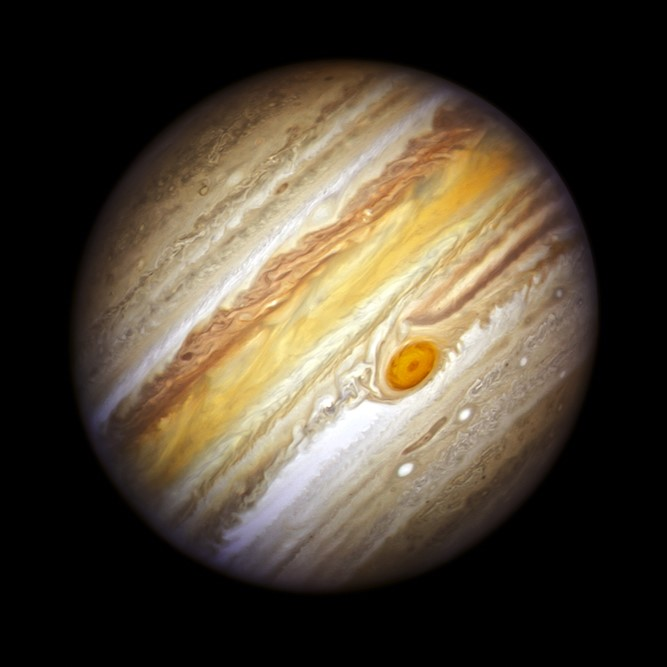

introduction
Jupiter is the fifth planet from the Sun and the largest in the Solar System. It is a gas giant with a mass more than two and a half times that of all the other planets in the Solar System combined, and slightly less than one one-thousandth the mass of the Sun. Jupiter orbits the Sun at a distance of 5.20 AU (778.5 Gm) with an orbital period of 11.86 years. Jupiter is the third brightest natural object in the Earth's night sky after the Moon and Venus, and it has been observed since prehistoric times. It was named after Jupiter, the chief deity of ancient Roman religion.
Jupiter
Mean radius: 69,911 km (43,441 mi) (10.973 of Earth's)
Surface area: 6.1469×1010 km2 (120.4 of Earth's)
Surface gravity: 9.80665 24.79 m/s2 (81.3 ft/s2)
Atmosphere
Surface pressure: 200–600 kPa (30–90 psi)
Composition by volume- 89%±2.0% hydrogen
- 10%±2.0% helium
- 0.3%±0.1% methane
- 0.026%±0.004% ammonia
- 0.0028%±0.001% hydrogen deuteride
- 0.0006%±0.0002% ethane
- 0.0004%±0.0004% water
Picture of Jupiter
About1
Jupiter was the first planet to form, and its inward migration during the primordial Solar System impacted much of the formation history of the other planets. Jupiter is primarily composed of hydrogen (90% by volume), followed by helium, which makes up a quarter of its mass and a tenth of its volume. The ongoing contraction of Jupiter's interior generates more heat than the planet receives from the Sun.
about2
Its internal structure is believed to consist of an outer mantle of fluid metallic hydrogen, and a diffuse inner core of denser material. Because of its rapid rotation rate of 1 rotation per 10 hours, Jupiter's shape is an oblate spheroid: it has a slight but noticeable bulge around the equator. The outer atmosphere is divided into a series of latitudinal bands, with turbulence and storms along their interacting boundaries. The most obvious result of this is the Great Red Spot, a giant storm which has been observed since 1831 and possibly earlier.
closing
Jupiter is surrounded by a faint planetary ring system and has a powerful magnetosphere, the second largest contiguous structure in the Solar System (after the heliosphere). Jupiter forms a system of 95 known moons and probably many more, including the four large moons discovered by Galileo Galilei in 1610: Io, Europa, Ganymede, and Callisto. Ganymede, the largest of the four, is larger than the planet Mercury. Callisto is the second largest; Io and Europa are approximately the size of Earth's Moon.
Since 1973, Jupiter has been visited by nine robotic probes: seven flybys and two dedicated orbiters, with one more en route and one awaiting launch.